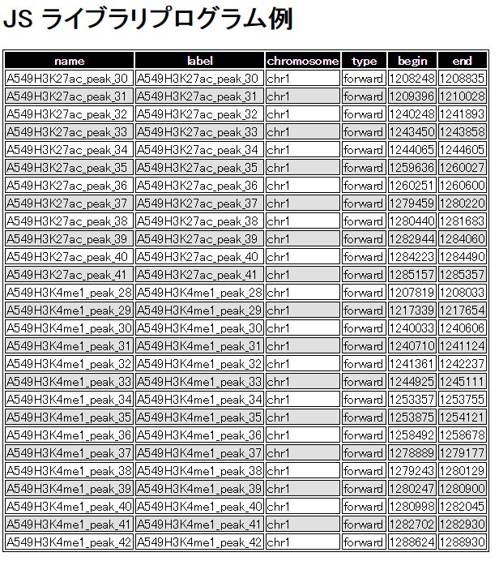

JavaScript ゲノム座標情報検索ライブラリ
目次
はじめに
ここでは、区間情報が格納されている SPARQL DB を検索する為の JavaScript ライブラリの使用方法を説明する。
SPARQL 関連の一般的な機能や、区間検索に関する機能を提供している。
使用方法
本ライブラリを使用するにあたっては、 まず以下のライブラリが必須である。
- Ajax
- jQuery
それらを使用する為に、まずはライブラリを使用する HTML ファイルの head タグに以下のコードを埋め込む。
<script src="http://ajax.googleapis.com/ajax/libs/jquery/1.9.0/jquery.min.js" type="text/javascript"></script>
<script src="http://code.jquery.com/jquery-1.11.0.min.js"></script>
そして、本ライブラリの SPARQL 関連機能を使用する場合には 以下のコードを埋め込む。
<script src="http://humanrdf.dbcls.jp/js/sparql.js" type="text/javascript"></script>
ゲノム座標検索関連の機能を使用する場合には さらに以下のコードを埋め込む。
<script src="http://humanrdf.dbcls.jp/js/faldo.js" type="text/javascript"></script>
これら全てを埋め込んだコードは以下の様になる。
<!DOCTYPE html>
<html lang="ja">
<head>
<title>本文タイトル</title>
<meta charset="utf-8">
<script src="http://ajax.googleapis.com/ajax/libs/jquery/1.9.0/jquery.min.js" type="text/javascript" ></script>
<script src="http://code.jquery.com/jquery-1.11.0.min.js"></script>
<script src="http://humanrdf.dbcls.jp/js/sparql.js"></script>
<script src="http://humanrdf.dbcls.jp/js/faldo.js"></script>
<script>
自分が行ないたい JavaScript の処理
</script>
</head>
<body>
本文
</body>
</html>
関数一覧
本ライブラリは以下の関数を提供する。
| 関数名 | ファイル | 説明 | 引数 | 戻り値 | |
|---|---|---|---|---|---|
| dbclsSparql.setEndpoint | sparql.js | Endpoint の URL をセットする。 | endpoint | Endpoint URL。何もセットしない時には http://humanrdf.dbcls.jp/sparql を使用する。 | なし |
| dbclsSparql.exec | sparql.js | SPARQL を実行する。 | sparql | SPARQL 文字列 | SPARQL 実行結果 (Ajax ライブラリにより得られるオブジェクト) |
| dbclsSparql.executeQuery | sparql.js | SPARQL クエリーを実行し、オブジェクト配列を得る。 | sparql | SPARQL 文字列 | オブジェクト配列。 オブジェクトが持つプロパティは SPARQL 文に依存する。 例えば "select ?name ?age ?birthday where { ..." の様な SPARQL 文の場合にはオブジェクトはプロパティとして name, age, birthday を持つ。 |
| dbclsSparql.addTableFromObjects | sparql.js | オブジェクト配列からテーブルを追加する。 | box | テーブルを加える要素のオブジェクト。 jQuery の $( セレクタ ) により取得する。 | なし |
| classPrefix | テーブルの要素に追加するクラス名の接頭辞。 例えば classPrefix に 'dbcls' を要素を指定すると、 追加するテーブルやその行、セルにクラス dbcls_table, dbcls_row, dbcls_cell, dbcls_header_row, dbcls_header_cell, dbcls_content_row, dbcls_content_cell, dbcls_content_odd_row, dbcls_content_even_row が付与される。 | ||||
| objects | オブジェクト配列 | ||||
| dbclsFaldo.getRegion | faldo.js | 区間オブジェクトを取得する。 | name | 区間オブジェクト名 (e.g., A549H3K27ac_peak32) | 指定した名前を持つ区間オブジェクト。 区間オブジェクトはプロパティとして name (オブジェクト名), label (ラベル), chromosome (染色体), type (forward か reverse か), begin (区間開始位置), end (区間終了位置) |
| dbclsFaldo.getInclusionRelation | faldo.js | 2つの区間オブジェクトの包含関係を取得する。 | name1 | 1つ目の区間オブジェクト名 (e.g., A549H3K27ac_peak32) | 2つの区間オブジェクトの包含関係。 戻り値は、dbclsFaldo.InclusionRelation.NOT_EXIST (存在しない), dbclsFaldo.InclusionRelation.DIFFERENT_REFFERENCE (違う染色体), dbclsFaldo.InclusionRelation.SAME_REFERENCE (染色体は同じだが重ならない), dbclsFaldo.InclusionRelation.OVERLAPPING (重なっている), dbclsFaldo.InclusionRelation.INCLUDING (どちらかが、もう片方に完全に含まれている) |
| name2 | 2つ目の区間オブジェクト名 (e.g., A549H3K27ac_peak32) | ||||
| dbclsFaldo.isOverlapping | faldo.js | 2つの区間オブジェクトが重なっているかを判定する。 | name1 | 1つ目の区間オブジェクト名 (e.g., A549H3K27ac_peak32) | 2つの区間オブジェクトが重なっている、もしくは どちらかがもう片方に完全に含まれているときは true。 重なっていない時には false。 |
| name2 | 2つ目の区間オブジェクト名 (e.g., A549H3K27ac_peak32) | ||||
| dbclsFaldo.isIncluding | faldo.js | 2つの区間オブジェクトにおいて、 片方の区間がもう片方の区間に完全に含まれているか否かを判定する。 | name | 区間オブジェクト名 (e.g., A549H3K27ac_peak32) | 片方の区間がもう片方の区間に完全に含まれていれば true。 そうでなければ false。 |
| name2 | 2つ目の区間オブジェクト名 (e.g., A549H3K27ac_peak32) | ||||
| dbclsFaldo.getRegionsInRange | faldo.js | 指定範囲に存在する区間オブジェクトを取得する。 | chrom | 検索対象染色体。(e.g., 'chr1') | 指定範囲に存在する区間オブジェクトの配列。 |
| start | 指定範囲、開始位置 | ||||
| end | 指定範囲、終了位置 | ||||
| include | 区間オブジェクトが指定範囲に完全に 含まれている必要がある場合には true。 そうでない場合は false。 | ||||
| dbclsFaldo.getUpstreamRegions | faldo.js | 指定区間の上流に含まれる区間オブジェクトを取得する。 | region | 検索の基準となる区間オブジェクト名。 (e.g., A549H3K27ac_peak32) | 指定範囲に存在する区間オブジェクトの配列。 |
| length | 検索する基準からの範囲の長さ。 | ||||
| include | 区間オブジェクトが指定範囲に完全に 含まれている必要がある場合には true。 そうでない場合は false。 | ||||
サンプル・プログラム
<!DOCTYPE html>
<html lang="ja">
<head>
<title>JS Demo</title>
<meta charset="utf-8">
<link rel="stylesheet" href="css/sparql.css">
<!-- テーブルのデザイン -->
<style>
.demo_table {
border: solid 1px #000000;
}
.demo_cell {
border: solid 1px #000000;
}
.demo_header_cell {
background-color: #000000;
color: #ffffff;
font-weight: bold;
}
.demo_content_odd_row {
background-color: #e0e0e0;
}
.demo_content_even_row {
background-color: #ffffff;
}
</style>
<!-- 必要ライブラリ -->
<script src="http://ajax.googleapis.com/ajax/libs/jquery/1.9.0/jquery.min.js" type="text/javascript" ></script>
<script src="http://code.jquery.com/jquery-1.11.0.min.js"></script>
<script src="http://humanrdf.dbcls.jp/js/sparql.js"></script>
<script src="http://humanrdf.dbcls.jp/js/faldo.js"></script>
<script>
// 読み込み時関数定義
function ready() {
// Endpoint セット
var endpoint = 'http://humanrdf.dbcls.jp/sparql';
dbclsSparql.setEndpoint( endpoint );
// Chromosome1, 範囲 1200000 - 130000 にある情報を取得。(重なれば OK)
var objects = dbclsFaldo.getRegionsInRange( 'chr1', 1200000, 1300000, false );
// テーブル追加
dbclsSparql.addTableFromObjects( $( '#result_box' ), 'demo', objects );
}
// 読み込み時関数呼び出し
$( function() {
ready();
})
</script>
</head>
<body>
<h1>JS ライブラリプログラム例</h1>
<!-- テーブル表示領域 -->
<div id="result_box"></div>
</body>
</html>
上記のHTMLファイルにより下記の様な画面が表示される。
